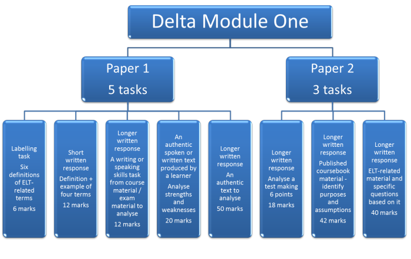
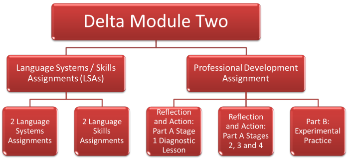
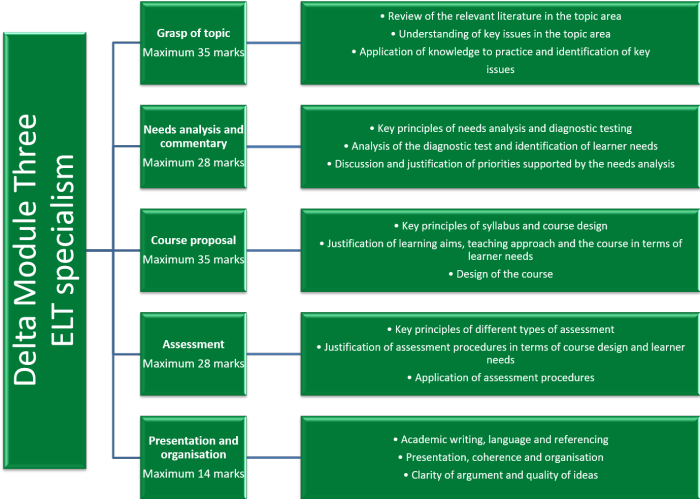
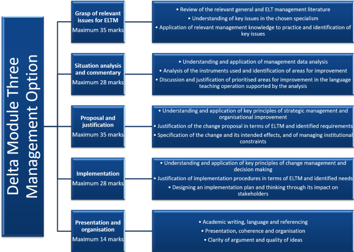

An overview of the Delta scheme
This is intended only as a reference guide and bird's eye view. More detail on each section is in the individual guides.
Module One |
Module One is assessed in a two-part examination. Each paper is 90 minutes long.
You do not have to take a course at a recognised centre or anywhere
else to enter the Delta Module One examination. You can take the
examination at any Cambridge Open Centre.
To find an open centre near you,
click here to go to the Cambridge site and enter the details.
Please note:
In response to the Covid-19 pandemic, ALL Delta centres may now offer
fully online courses for all three modules of the Delta scheme. If
you go to the link above, and search for a Distance Delta centre (via
the United Kingdom) you will only be offered the three established
online centres.
This is, of course, nonsense now because many other centres, previously
offering only face-to-face courses, are now offering a range of
online-only options.
Serious consideration is being given to making the temporary
arrangements for online-only delivery of Delta courses a permanent
fixture as is the case, incidentally, for CELTA courses.
The Module covers:
- theoretical perspectives on language acquisition and language teaching
- different approaches and methodologies, including current developments
- language systems and learners’ linguistic problems
- language skills and learners’ problems
- knowledge of resources, materials and reference sources for language learning
- key concepts and terminology related to assessment.
The examination targets different areas:
- Paper 1 tests your knowledge of ELT terminology, writing and speaking sub-skills and language systems (grammar, lexis, phonology and discourse).
- Paper 2 tests your knowledge of ELT testing, the aims, purposes and principles behind published teaching materials and the principles and beliefs underlying ELT methodology.
It looks like this:

Marking
Each paper is worth 100 marks.
The marks you need to get out of 200 are, approximately:
Pass: 100 | Pass with Merit: 130 | Pass with Distinction: 150
 |
Module Two |
Module Two is assessed via 2 Language Systems Assignments, 2 Language
Skills Assignments and a two-part Professional Development Assignment.
One of the Language Assignments is externally assessed by a
Cambridge-appointed assessor.
Temporarily, because of the Covid-19 pandemic, Cambridge have altered the rules so that you can now undertake the external and internal assessments of your teaching in three ways:
- Traditionally, with the observer sitting in on a live lesson with all learners present. Previously, this was the only way assessments of teaching were done.
- With you and the learners in the same room but the assessor or tutor watching a live stream of the lesson. Note that the lesson must be viewed live. You cannot submit a recording.
- With you teaching fully online with no face-to-face contact with the learners. The assessor or tutor will simply be a participant (although silent) but will need access to break-out rooms and so on.
This means that ALL Delta centres may now offer fully online
courses for Module Two of the Delta. If you go to the link
above, and search for a Distance Delta centre (via the United
Kingdom) you will only be offered the three established online
centres.
This is, of course, nonsense now because many other centres,
previously offering only face-to-face courses, are now offering a
range of online-only options.
Note that these are, allegedly, temporary arrangements
but serious consideration is being given to making this a permanent
change as is the case, incidentally, for CELTA courses.
The Module covers:
- the language learner and the language learning context
- preparation for teaching English language learners
- evaluating, selecting and using resources and materials
- managing and supporting learning
- evaluation of lesson preparation and teaching
- observation / evaluation of other teachers’ lessons
- professionalism and opportunities for professional development
It looks like this:

Word limits
If your document is close to the minimum limit, check what
you have left out.
These limits are absolute and there is no leeway.
| For the Background Essay for all Language Systems and Skills Assignments | 2000 – 2500 words |
| For the Commentary on the Lesson Plan | 500 – 750 words |
| For the post-lesson Reflection and Evaluation | 300 – 500 words |
| For Part A Stage 2 of the Professional Development Assignment | 800 – 1000 words |
| For Part A Stage 3 of the Professional Development Assignment | 600 – 750 words |
| For Part A Stage 4 of the Professional Development Assignment | 600 – 750 words |
| For Part B of the Professional Development Assignment (Experimental Practice) | 1500 – 2000 words |
Marking
Module Two is assessed both internally and externally (i.e., one of
the LSAs is assessed by an external assessor). In addition,
one complete internally assessed LSA is sent to Cambridge for
moderation.
NB: If the externally assessed lesson is skills based, the
assignment sent to Cambridge must be systems based and vice
versa. In effect, this means you have to pass
both parts of one systems-based assignment and both parts of one
skills-based assignment to be considered for a pass in Module Two.
You need to achieve the following:
- For a Pass:
- a Pass grade in both parts of the submitted internally
assessed assignment (i.e., the one sent to Cambridge)
a Pass grade in both parts of the external assessment
completion of both parts of the PDA (i.e., you don't need to pass it but you do need to do it)
In your internal coursework, you must have at least one Pass grade for a Background Essay and one Pass grade for teaching. - For a Pass with Merit:
- a minimum of a Pass grade for the submitted internally
assessed background essay
a Pass or Merit grade for the submitted internally assessed lesson
a minimum of a Pass grade for the externally assessed
a Pass in both parts of the Professional Development Assignment
In your internal coursework, you must have at least one Merit grade for teaching and three other Pass grades. - For a Pass with Distinction:
- a minimum of a Pass grade for the submitted internally
assessed background essay
a Merit or Distinction grade for the submitted internally assessed lesson
a minimum of a Pass grade for the externally assessed background essay
a Distinction grade for the externally assessed lesson
a Pass in both parts of the Professional Development Assignment
 |
Module Three |
There are two options for this module
- Option 1: Extending practice and English language teaching specialism
- This module focuses on needs analysis, syllabus design, course planning and assessment in the context of a selected specialism.
- Option 2: English Language Teaching management
- This module focuses on situation analysis and planning, and implementing change in the context of a selected management specialism.
Assessment for both options is through a written assignment of 4,000–4,500 words.
You do not have to take a course at a recognised centre or anywhere
else to enter Delta Module Three. You can submit
an assignment through any Cambridge Open Centre.
To find an open centre near you,
click here to go to the Cambridge site and enter the details.
Please see the comment above and note that many centres are now offering
online only taught courses for Module Three.
It looks like this for Option 1 (Extending Practice and ELT specialism):

and like this for Option 2 (English Language Teaching management):

Marking
Module Three is marked externally out of a maximum possible mark of
140. The marks you need to get are, approximately:
Pass: 80 | Pass with Merit: 100 | Pass with Distinction: 120
 |
Delta pass rates: your chances of passing |
Pass rates are better than many will have you believe.
Here are the figures for Delta pass rates for each Module.
| Module One | Module Two | Module Three | |
| Distinction | 7.7% | 4.0% | 3.8% |
| Merit | 14.0% | 23.9% | 26.3% |
| Pass | 39.5% | 51.9% | 45.4% |
| Total pass | 61.2% | 79.8% | 75.5% |
| Referred | Not possible | 18.3% | 20.6% |
| Fail | 38.8% | 1.9% | 4.0% |
Before you start a Delta course, you may like to ask yourself What makes an expert teacher? There is an article on this site intended to answer that question.
If you want to check your knowledge of the Delta scheme, try this short test.